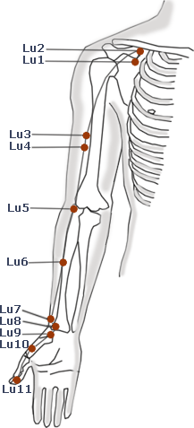

Acupuncture Points
Xue (cavities) in Chinese.
Areas near the surface of the body from which the qi is accessible.
Small as a millimeter to as large as a quarter.
361 points on Meridians, not counting bilateral pairs.
40 main "extra" points not located on Meridians.
"Ahshi" points - where it hurts, can be anywhere.
Traditional functions and indications.
More than one function, sometimes seemingly unrelated (plus combinations with other points).
Control qi and blood of the local area.
Traditional locations
Based on precise anatomical measurements and anatomical landmarks.
Traditional ways to needle each point.
Angle and depth of needle
Needle technique

Acupuncture Point Categories
yuan (source)
luo (connecting)
xi (cleft)
8 hui (meeting)
6 lower he (sea)
8 jiaohui (confluent/8 EM)
4 command
12 mu (alarm/front)
shu (associated/back)
5 shu (transporting)
jiaohui (intersection)
huato jiaji (paravertebral)
9 needles for returning yang
12 heavenly star points
13 ghost points
ashi points
A Typical Meridian Point
LU-6 (Lung-6)
kong zui – maximum opening
xi-cleft point
Location
On the flexor aspect of the forearm, 7 cun proximal to LU-9, on the line connecting LU-9 with LU-5.
Needling Method
Perpendicular or oblique insertion 0.5 to 1.5 cun.
Actions
Disseminates and descends Lung qi.
Clears heat and moistens the Lung.
Clears heat and stops bleeding.
Moderates acute conditions.
Indications
Cough, wheezing, asthma, chest pain, swelling and pain of the throat, loss of voice, febrile disease with absence of sweating.
Coughing blood, spitting blood, vomiting blood, hiccup.
Severe pain of the elbow and upper arm, inability to raise the arm above the head, difficulty in flexing and extending the fingers, epigastric pain, hemorrhoids, headache, clonic spasm.